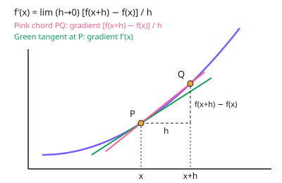

A-level Maths Year 12 · Topic 3
Calculus in depth
Calculus in depth is the study of change: how fast things change, and how changes add up.
We will differentiate from first principles, find tangents and normals, stationary points, and solve optimisation problems.
Then we integrate, find areas under curves and between curves and lines, and differentiate and integrate e to the k x.
- 7 subtopics
- 389 questions
- Free: 3.1 notes and 10 questions
In this topic
- 3.1Differentiation from first principles and the derivative of x^nFree below · 57 questions
- 3.2Tangents, normals and gradient of a curve at a pointOpen in Full Marks · 53 questions
- 3.3Increasing and decreasing functions, stationary points and the second derivativeOpen in Full Marks · 65 questions
- 3.4Optimisation and rates of change in context; sketching gradient functionsOpen in Full Marks · 47 questions
- 3.5Indefinite integration of x^n and finding constants of integrationOpen in Full Marks · 47 questions
- 3.6Definite integrals, area under a curve and area between a curve and a lineOpen in Full Marks · 62 questions
- 3.7Differentiating and integrating e^kxOpen in Full Marks · 58 questions
3.1 · Free notes
Differentiation from first principles and the derivative of x^n

Key points
- The gradient of a chord joining P(x, f(x)) and Q(x+h, f(x+h)) is [f(x+h) − f(x)]/h. As Q moves towards P (h → 0) the chord becomes the tangent at P.
- Differentiation from first principles: f′(x) = lim (h→0) [f(x+h) − f(x)]/h. Examiners expect this definition written out with the limit notation.
- Method: write f(x+h), expand it, subtract f(x), divide every term by h, simplify, and only then let h → 0. Cancel h before taking the limit, because substituting h = 0 early gives 0/0.
- For x² the chord gradient simplifies to 2x + h, so f′(x) = 2x. For x³ it simplifies to 3x² + 3xh + h², so f′(x) = 3x². Use (x+h)³ = x³ + 3x²h + 3xh² + h³ (the binomial expansion) and watch the signs.
- Derivative of xⁿ: if f(x) = xⁿ then f′(x) = nxⁿ⁻¹, valid for all rational n (positive, negative and fractional). Multiply by the power, then reduce the power by 1.
- Constants differentiate to 0, and kxⁿ differentiates to knxⁿ⁻¹. Differentiate term by term, so a sum or difference of terms is differentiated one term at a time.
- Rewrite before differentiating: √x = x^(1/2), 1/x² = x⁻², 3/x = 3x⁻¹. Expand brackets or divide through first, because there is no 'differentiate each factor' shortcut for a product.
- Notation: dy/dx and f′(x) both mean the gradient function, which gives the gradient of the tangent at any point. The second derivative is d²y/dx² or f″(x).
- The derivative is a rate of change, and its units are (units of y) per (units of x). For example, if s is in metres and t in seconds, ds/dt is in m s⁻¹.
- Common errors: dropping h too early, losing a term when expanding (x+h)ⁿ, forgetting to divide by h, writing f(x+h) = f(x) + h, and omitting 'lim' or 'h → 0' in a 'show that' proof.
- Check results with the xⁿ rule: first principles for x² must give 2x and for x³ must give 3x². A mismatch means an algebra slip.
In more detail
- Worked first principles, x²: f′(x) = lim [(x + h)² − x²]/h = lim (2xh + h²)/h = lim (2x + h) = 2x.
- Worked first principles, x³: (x + h)³ − x³ = 3x²h + 3xh² + h³; divide by h → 3x² + 3xh + h² → 3x² as h → 0.
- Worked rewriting: y = 3/x² + √x = 3x⁻² + x^(1/2) → dy/dx = −6x⁻³ + ½x^(−1/2).
- Worked fraction: y = (x² + 4)/x = x + 4x⁻¹ → dy/dx = 1 − 4/x².
- Worked chord: on y = x², the chord from x = 3 to x = 3.1 has gradient (9.61 − 9) ÷ 0.1 = 6.1, approaching the tangent gradient 6.
Practice
Differentiation from first principles and the derivative of x^n: 10 questions
Pick an answer to check it, or open the answer for the explanation.
1. On y = x², the chord joins the points at x = 2 and x = 2 + h. Which expression gives its gradient after simplifying?
- 4 + h
- 4h + h²
- 4 + 2h
- 2 + h
Show answer
A: 4 + h. Gradient = [(2+h)² − 4]/h = (4h + h²)/h = 4 + h. The option 4h + h² is the numerator before dividing by h.
2. Differentiate y = 5x³ − 4x + 7 with respect to x.
- 15x² − 4x
- 15x² − 4 + 7
- 5x² − 4
- 15x² − 4
Show answer
D: 15x² − 4. Use nxⁿ⁻¹ on each term: 5x³ gives 15x², −4x gives −4, and the constant 7 gives 0.
3. Differentiate f(x) = √x.
- 1/(2x)
- 1/(2√x)
- √x/2
- 2√x
Show answer
B: 1/(2√x). Write f(x) = x^(1/2). Then f′(x) = ½x^(−1/2) = 1/(2√x).
4. For f(x) = x³, the chord from x to x + h has gradient [f(x+h) − f(x)]/h. Which simplified form is correct?
- 3x² + 3h
- 3x² + h²
- 3x² + 3xh + h²
- 3x²h + 3xh² + h³
Show answer
C: 3x² + 3xh + h². (x+h)³ − x³ = 3x²h + 3xh² + h³. Dividing by h gives 3x² + 3xh + h², which tends to 3x² as h → 0.
5. A car's distance is s = 4t² metres after t seconds. What is its rate of change of distance at t = 3 s?
- 12 m s⁻¹
- 36 m s⁻¹
- 24 m
- 24 m s⁻¹
Show answer
D: 24 m s⁻¹. ds/dt = 8t, which is 24 at t = 3. The units are metres per second, so 24 m s⁻¹.
6. In a first-principles proof for x², you reach lim (h→0) (2xh + h²)/h. What is the correct next step?
- Differentiate the numerator to give 2x + 2h
- Cancel h to get 2x + h, then let h → 0 to give 2x
- Substitute h = 0 to give 0
- Substitute h = 0 to give 0/0, so no derivative exists
Show answer
B: Cancel h to get 2x + h, then let h → 0 to give 2x. Factorise and cancel h first (valid because h ≠ 0 in the limit), leaving 2x + h. Then let h → 0 to get 2x.
7. Which statement about f′(x) is correct?
- It is the gradient of the chord between two fixed points
- It is the gradient of the tangent at the point with x-coordinate x
- It is the value of f(x) when h = 0
- It is the area under the curve up to x
Show answer
B: It is the gradient of the tangent at the point with x-coordinate x. f′(x) is the limit of the chord gradients as h → 0, which is the gradient of the tangent at that point.
8. For f(x) = x³, the chord from x = 2 to x = 2 + h has gradient. Which simplified expression is correct?
- 12 + 6h + h²
- 12 + 3h + h²
- 12h + 6h² + h³
- 8 + 6h + h²
Show answer
A: 12 + 6h + h². (2+h)³ = 8 + 12h + 6h² + h³. Subtract 8 and divide by h to get 12 + 6h + h². As h → 0 the gradient tends to 12 = 3(2)².
9. Why must h be cancelled from the numerator and denominator before taking the limit h → 0 in a first-principles proof?
- Because h is a constant that never changes
- Putting h = 0 into the unsimplified quotient gives 0/0, which is undefined
- Because h is always larger than every other term
- Because the limit of a fraction is always its numerator
Show answer
B: Putting h = 0 into the unsimplified quotient gives 0/0, which is undefined. Before simplifying, [f(x+h) − f(x)]/h becomes 0/0 at h = 0, which is undefined. Cancelling the factor h first leaves an expression that can be evaluated.
10. Find the gradient of the curve y = x^(3/2) at the point where x = 4.
- 3/4
- 6
- 12
- 3
Show answer
D: 3. dy/dx = (3/2)x^(1/2). At x = 4 this is (3/2)(2) = 3. Take care to reduce the power by 1 to get 1/2, not to keep 3/2.
Keep going in Full Marks
Full Marks has 57 questions on Differentiation from first principles and the derivative of x^n (47 more than here), set out in practice levels. You also get notes and 3D models for all 7 subtopics of Calculus in depth, plus games, timed exams and past papers.